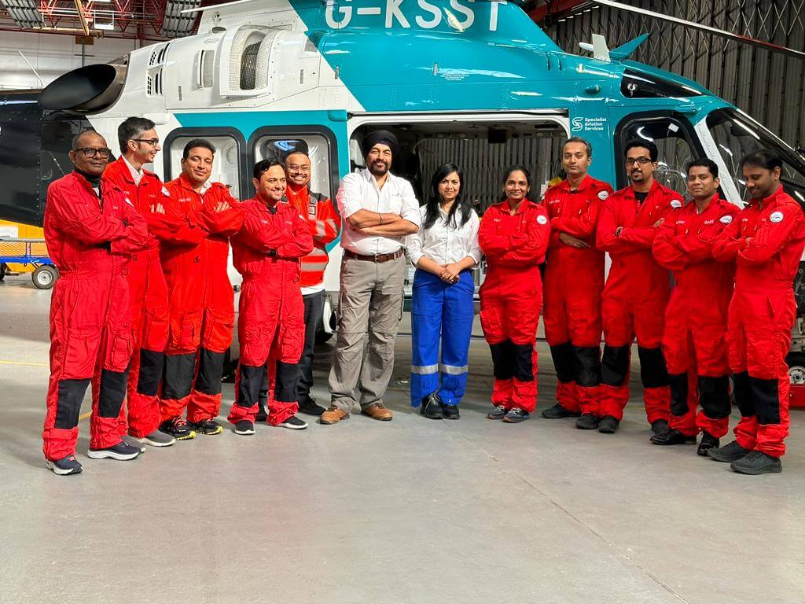

2023
Safety Protocol Compliance Recognition
Standard checks, consistent documentation, and risk-aware decision making.
Safety
Independent Audit Panel
SkyRescue Air Ambulance is a patient-first air medical service focused on fast coordination, ICU-ready care in transit, and seamless hospital-to-hospital transfers across India.

From a mission-driven start to a safety-led air medical service—each milestone reflects better response, stronger coordination, and ICU-ready transfers.
To make time-critical medical transfers faster, safer, and better coordinated for families and hospitals.
Standardized onboard care planning—equipment, monitoring, and staffing aligned to patient condition.
Built smoother referrals and handovers with partner hospitals for bedside-to-bedside continuity of care.
Improved end-to-end time by coordinating ground ambulances with flight schedules and receiving teams.
Faster dispatch workflows with clearer updates—families, hospitals, and teams stay aligned throughout.
Enhanced readiness for specialized transfers with better planning, staffing, and clinical support paths.
Trusted by partners and validated through performance, safety discipline, and consistent bedside-to-bedside coordination.
Validated for reliable planning, communication discipline, and continuity of care from referral to handover.
Standard checks, consistent documentation, and risk-aware decision making.
Dispatch clarity, quick mobilization, and smooth team coordination.
Equipment readiness, monitoring standards, and patient-first planning.
Calm communication, consistent updates, and dependable coordination.
Clear workflows, stable processes, and documented handover discipline.
Reliable coordination across teams with predictable outcomes.
What drives SkyRescue — and how we operate when every minute matters.
We exist to reduce uncertainty for families and hospitals by ensuring disciplined coordination, ICU-ready planning, and clear communication at every step.